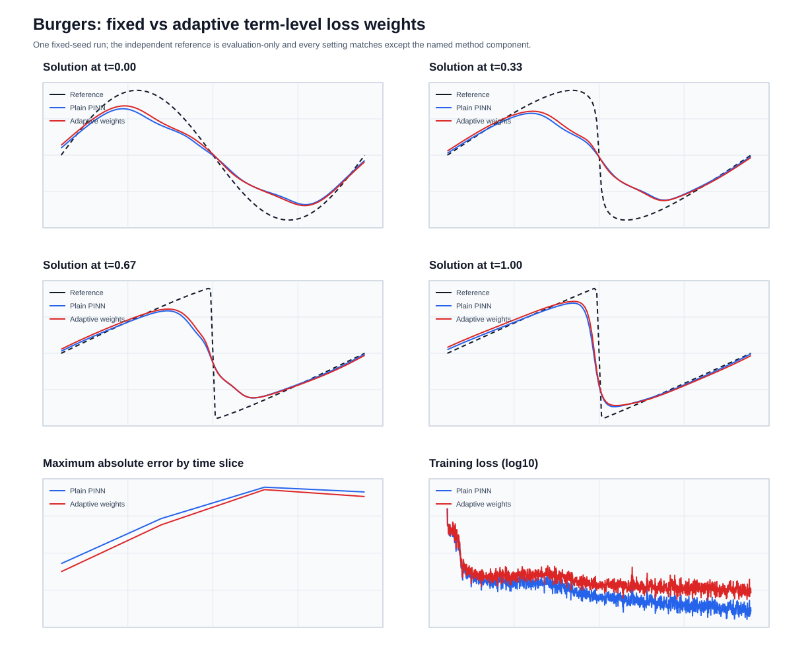

损失平衡与自适应权重
方法速览
- 调用简称:
method="adaptive_weights"，variant="self_adaptive"- 简单介绍:
为 PDE、边界和初值等损失项各学习一个正权重，网络下降而权重上升。
- 适用方向:
少量损失大项之间长期失衡的情况；它不是论文中的逐配点完整 SA-PINN。
- 论文原文:
- 代码与许可:
参考代码；未检测到明确 LICENSE；当前项级版本仅依据鞍点思想独立实现。
超参数怎么改
op.method(
"adaptive_weights",
"self_adaptive",
lr=0.01,
min_weight=1e-06,
max_weight=100.0,
)
参数 |
默认值 |
含义与修改影响 |
|---|---|---|
权重学习率 |
|
损失权重梯度上升时使用的学习率。 调大让权重反应更快，但可能振荡或迅速顶到上限；调小更稳定，但难以在有限步数内明显调整。 |
最小权重 |
|
自适应权重允许达到的下界。 调大可防止某项被忽略，但可能压制其他任务；调小允许更强降权，也可能让某项几乎失去作用。 |
最大权重 |
|
自适应权重允许达到的上界。 调大允许更强地关注困难项，但可能造成梯度爆炸；调小更稳，却可能限制自适应能力。 |
建议先保留默认值完成短跑，再一次只改一个参数并记录误差与时间。也可以在 配置生成器 中选择方法后直接编辑这些参数；调大或调小都不保证精度一定提高。
这个家族现在包含不同机制，不能只看“都是权重”就认为公式相同。旧默认
self_adaptive 是每个损失项一个梯度上升权重；新增页面分别说明不确定性权重、
ReLoBRaLo、固定幂损失和完整逐点 SA-PINN。
原有默认：项级自适应权重
这是什么
Burgers PINN 同时有 PDE、边界和初值损失。固定权重始终是 1；自适应版本让 三个正权重也参与训练。网络参数最小化加权损失，权重参数最大化同一目标， 使持续误差大的项得到更多关注。
放在哪里
权重容器：
src/openpinn/losses.py的AdaptiveLossComposer；下降/上升交替：
src/openpinn/training.py；统一调用：
loss.weighting.name: self_adaptive；对比入口：
examples/burgers_adaptive_weights.py。
实现范围要说清
论文的完整 SA-PINN 给每个配点一个可训练掩码。OpenPINN 当前的公共接口输出 的是三个已经取平均的标量损失，所以这一步接入的是“每项一个可训练权重”。 它保留了梯度下降/上升的鞍点思路，但不是论文逐配点方法的完整复刻。
依据与许可
核心论文：McClenny and Braga-Neto, Self-adaptive physics-informed neural networks, Journal of Computational Physics 474 (2023) 111722，DOI
10.1016/j.jcp.2022.111722。参考仓库：
https://github.com/levimcclenny/SA-PINNs。该仓库未检测到明确 LICENSE，不把它视为可自由复制的代码。本实现仅依据论文的鞍点概念独立编写，没有复制、改写或翻译参考仓库代码。
最短调用
import openpinn as op
result = op.solve(
"burgers", method="adaptive_weights", variant="self_adaptive", steps=5000
)
怎么跑
PYTHONPATH=src python -m examples.burgers_adaptive_weights \
--output-dir runs/burgers_adaptive_weights_<timestamp>
公平对比
两组共用同一 Burgers 方程、随机种子、采样、64×4 MLP、Adam 和 1500 步。 三个权重都从 1 开始。普通组固定不动；改进组每步使用学习率 0.01 的 SGD 做一次权重梯度上升。改进组因方法本身多 3 个标量参数。
参考实验结果
2026-08-26 在 CPU 上使用固定随机种完成 1500 步对比。两组都完成， 1500 条权重历史、checkpoint、预测和 SVG 均通过结构/有限值检查。 Cole–Hopf 参考解只用于训练后评价。
方法 |
相对 L2 |
最大绝对误差 |
PDE 残差 RMSE |
边界 RMSE |
初值 RMSE |
训练时间 |
|---|---|---|---|---|---|---|
固定权重 |
0.40998 |
0.93943 |
0.22334 |
0.03762 |
0.22689 |
4.015 s |
自适应权重 |
0.38543 |
0.92323 |
0.25131 |
0.06188 |
0.20291 |
4.600 s |


自适应组最终学到的 PDE、边界和初值权重分别为 1.380、1.045 和 1.578。
完整结果位于 results/methods/burgers_adaptive_weights_reference_20260826/。相对 L2、最大误差和
初值 RMSE 更低，但 PDE 残差、边界 RMSE 和用时更高，因此不能声称整体更优。该参考实验只确认了
权重为正、会更新，并且可完整保存/恢复其训练状态。
限制和失败记录
权重上升过快会使训练不稳定，所以配置显式给出学习率和上限。
self_adaptive是“每项一个权重”；完整逐配点版本已经作为独立的pointwise_self_adaptive变体接入，不能混用两个简称。仅一个固定种子，不作统计优越声明。
学到的权重保存到
metrics.json、history.csv和 checkpoint；失败另存failure.json与failure_notes.md。